Snapchat+ is Snap's $3.99 per month subscription for power users, offering more than 40 exclusive features across customization, messaging, and social expression.
When I took over design, Snapchat+ was growing but still operated as a series of feature drops. Growth spiked with each launch, then flattened. The opportunity was to transform it from a collection of perks into a cohesive membership powered by compounding systems.
Snapchat+ sits within Snap's direct revenue pillar and serves a young, price-sensitive audience. Value had to feel fun, visible, and instantly legible.
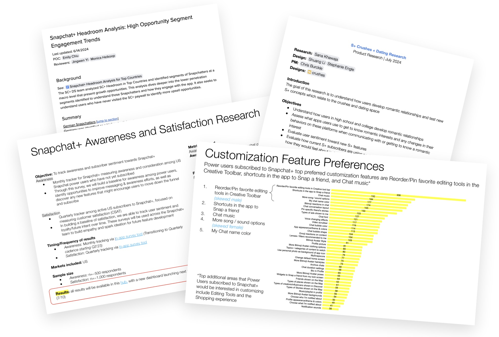
Through CSAT surveys, UXR sessions, and data reviews, I identified three structural issues:
I drove work across three parallel tracks designed to reinforce one another.
The first priority was fixing the foundation, starting with the paywall. Our paywall has two steps: first introducing the value of Snapchat+, then asking users to choose a plan.
The original feature page presented everything in one long list. Most people never scrolled past the first screen, so the strongest perks were buried.
I restructured the page to surface the five most loved perks at the top, making the value immediately clear. The remaining features were grouped into simple categories to improve scanning and help the membership feel cohesive rather than scattered.
The redesign shifted the paywall from a dense list of features to a clear story about value, making it easier for users to understand what they were getting and why it was worth paying for.
With the value story clarified, the next step was optimizing plan selection.
We simplified the comparison experience and made annual plans more prominent, reducing friction and improving clarity at the moment of decision. This led to a 1.8% lift in total purchases and an 8% increase in annual plan adoption.
We ran multiple iterations across pricing structure, discount presentation, badging, and comparison layouts. By building a systematic set of plan picker components, we could test quickly and personalize the paywall for different cohorts, ensuring we surfaced the right plan at the right time. We also introduced Quick Checkout directly on the feature page — removing that extra step sped up decision making and drove a 9.3 percent lift in conversion.
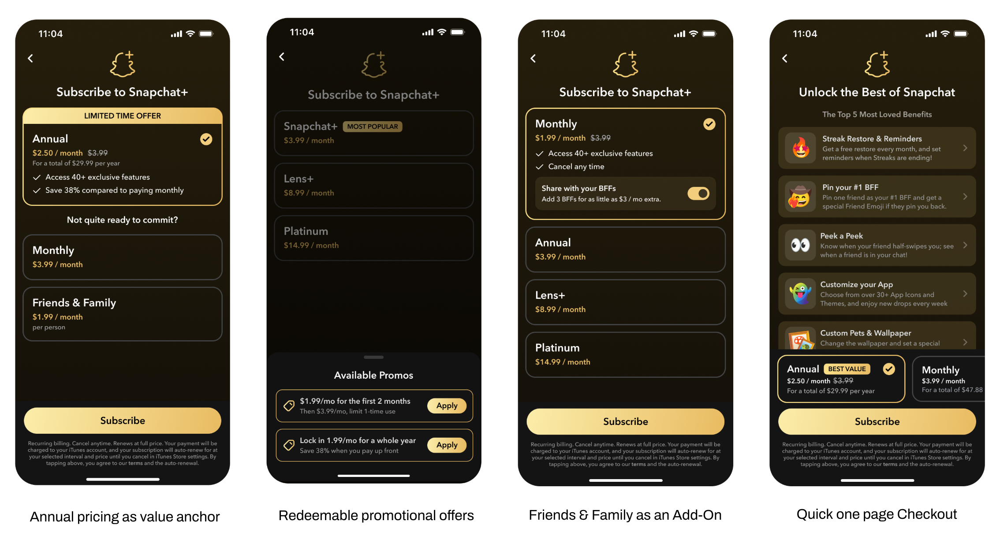
We found some Snapchat+ members never engage with many key perks, which led to limiting perceived value and hurt retention.
I redesigned new member onboarding to guide members toward high-impact actions that demonstrate value quickly, like applying app themes, selecting a Bitmoji pet, pinning a best friend, and enabling their membership badge. Instead of listing features, the step-by-step flow prompted immediate personalization and social expression.
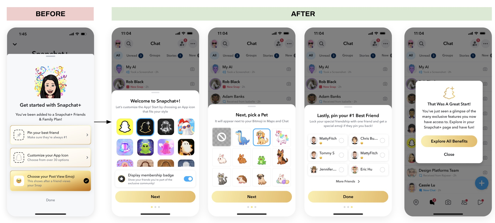
By front-loading meaningful actions, the experience shifted from passive access to active participation.
Adoption of key perks increased between 5 to 20 percent, and total feature usage increased by 1.5 percent. Helping members quickly experience value improved retention stability.
Snapchat+ could be gifted, but the experience felt transactional and visually plain. It supported one-time purchases, yet lacked emotional depth and long-term upside.
I redesigned gifting to feel personal and occasion-driven, introducing themed visuals and integrating sender and recipient Bitmojis to make the interaction feel shared rather than generic.
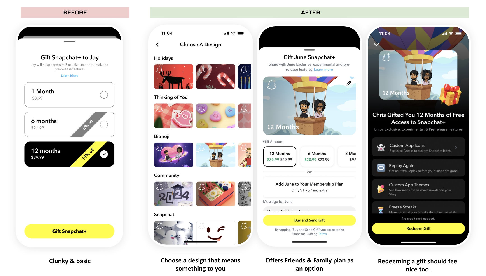
Beyond design, I expanded the monetization model by adding an upsell to include recipients in a Family Plan. This shifted gifting from a temporary gesture to an ongoing membership relationship, increasing long-term revenue potential while keeping the flow seamless.
The result was a more expressive, socially native gifting experience that strengthened advocacy and deepened monetization.
The Family Plan upsell within gifting drove a 47.07 percent increase in Family Plan purchases. Revenue modeling showed approximately 16.5 percent more revenue compared to relying only on individual plans. Family Plan subscribers grew roughly 220 percent after launch.
As Snapchat+ matured, I saw a pattern: one-time perks drove spikes. Recurring mechanics drove behavior.
Inspired by the guest passes offered in my climbing gym membership, I designed Buddy Pass as a monthly redeemable perk. Members could gift friends 7-day access to Snapchat+ directly inside Chat. Passes reset each billing cycle, creating light urgency.
This reframed referrals from transactional discounts to personal gestures — and introduced a recurring social growth loop embedded into the subscription. Buddy Pass was heavily adopted and internally recognized as one of the highest-leverage drivers of network-based conversion.
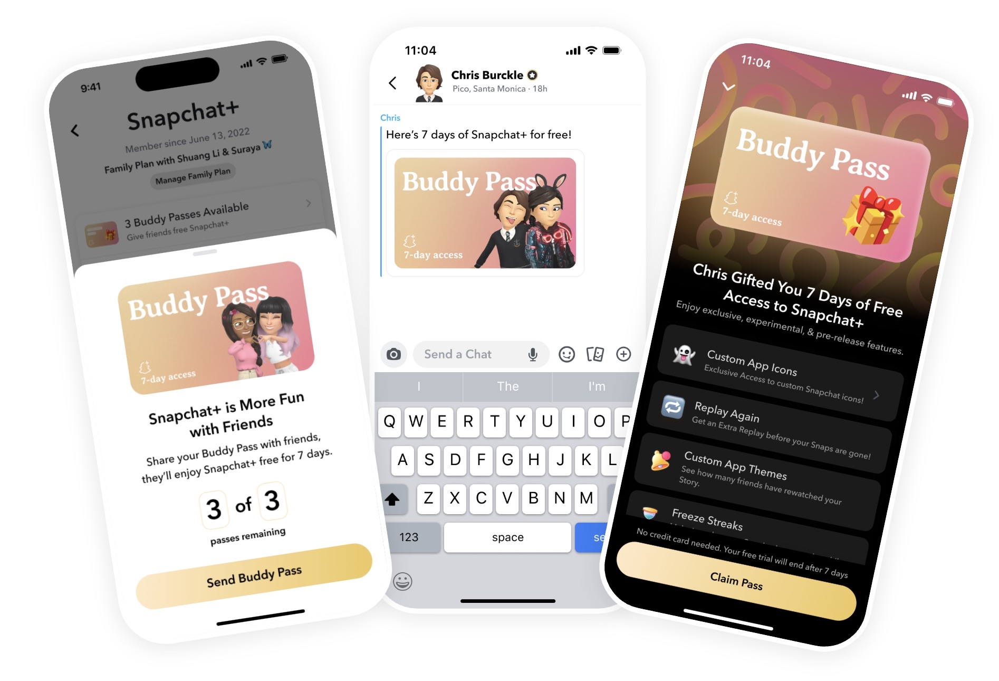
After seeing how Buddy Pass built habit through recurring redemption, I proposed expanding the mechanic beyond referrals. Many Snapchat+ perks existed passively in the background, which limited perceived value. Members often weren't aware of the full set of benefits or weren't prompted to actively engage with them.
I pitched converting a few background perks into monthly drops — limited-time, redeemable items that members actively claim. This shifted the experience from static entitlement to participatory ritual. Instead of simply "having access," members now had something to anticipate, redeem, and share.
The result was a consistent monthly return trigger embedded directly into the subscription. It also created a flexible framework for launching experimental features and highlighting new releases in a structured way.
Building on this system, I designed additional redeemable perks, including a mystery pet draw, to introduce surprise and variability — reinforcing retention through both habit and delight.
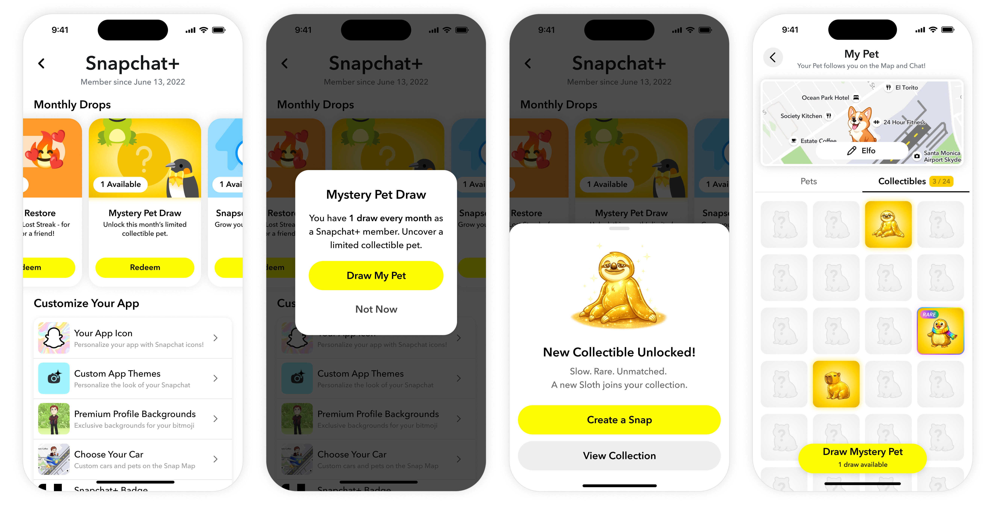
Research showed that having at least one close friend with Snapchat+ increased adoption by 633%. The opportunity was clear: social proximity drove conversion. The constraint was cultural. Snapchat resists overt status signaling, and overexposing membership risked backlash and UI clutter across dense surfaces like Chat.
When I took ownership, the badge was inconsistently surfaced and easy to miss, limiting its network effect. I reframed badge visibility as infrastructure, not decoration. Instead of adding more upsell prompts, I embedded passive social signals directly into high-frequency interaction surfaces including Chat feed, Chat header, and Stories. This shifted badge visibility from a cosmetic element to a compounding distribution system.
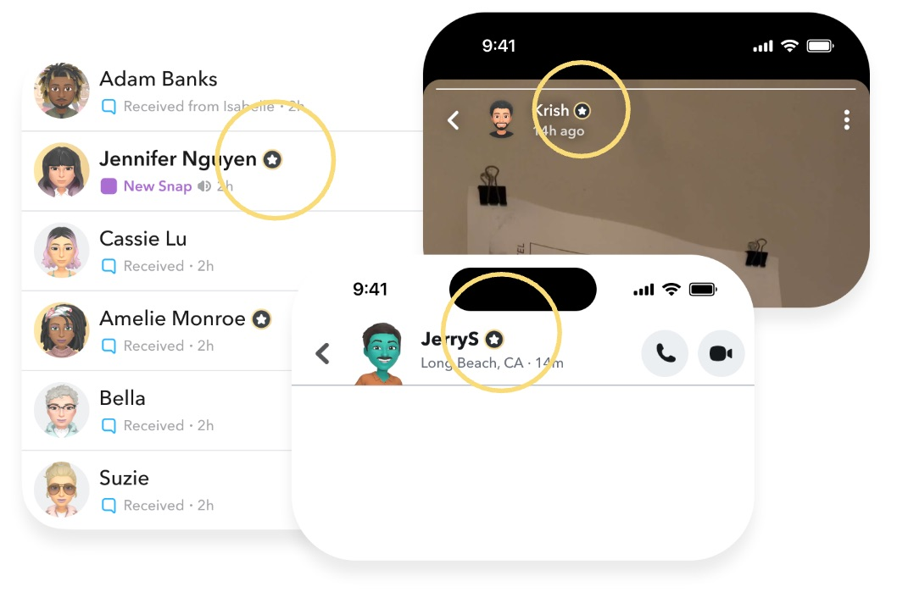
Snapchat is built on ephemerality, but before Snap Modes, users had limited, hard-to-discover controls over how ephemeral or replayable their Snaps were. At the same time, the Snapchat+ team needed high-impact "superpower" features that could justify subscription and deepen daily Snapping.
I created the concept and design vision for Snap Modes, a member-only feature that lets Snapchatters choose how their Snaps are delivered and viewed. I defined the opportunity as making ephemerality expressive: give people fun, contextual ways to control how a Snap behaves, while keeping the camera experience fast and lightweight.
I led end-to-end UX for the Snap Modes framework, partnered closely with UXR on concept validation, and drove the cross-functional spec, implementation details, and roadmap for future modes. For the MVP, I focused on core ephemerality controls:
A Snap locked behind a prompt — the recipient enters the correct answer to reveal it, adding playfulness and a privacy guardrail.
A Snap that stays hidden until the recipient sends one back, encouraging reciprocity and more authentic back-and-forth.
Compose a Snap now and schedule it to arrive at a specific time — ideal for birthdays, time zones, and timed reminders.
With UXR, I concept-tested multiple candidate modes (Scheduled Snap, Snap to Reveal, Codeword, Location Snap, Self Destruct) using interactive mocks that reflected the actual Snap Modes tray and flows. Key findings that shaped the roadmap:
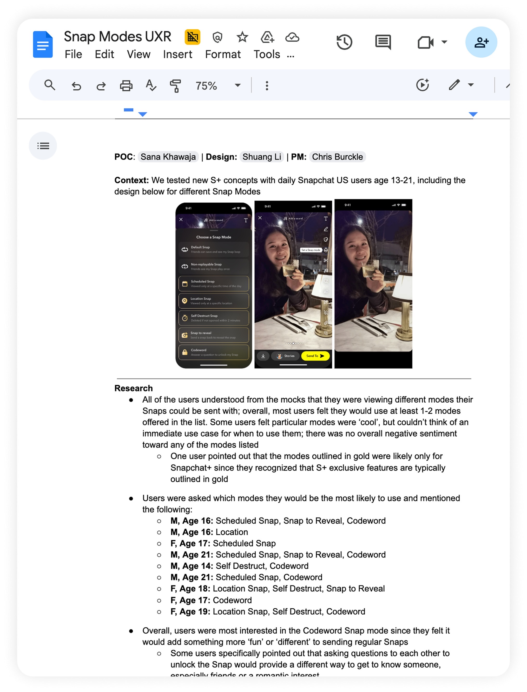
This gave us confidence in the overall Snap Modes framework and a user-validated shortlist of future modes to prioritize.
To scale beyond the MVP, I partnered with PM and UXR on brainstorming ideas and organizing them into four opportunity areas: Crushes, Privacy, Utility, and Fanout.
I turned this into a prioritized backlog of modes, balancing desirability, implementation cost, and differentiation for Snapchat+.
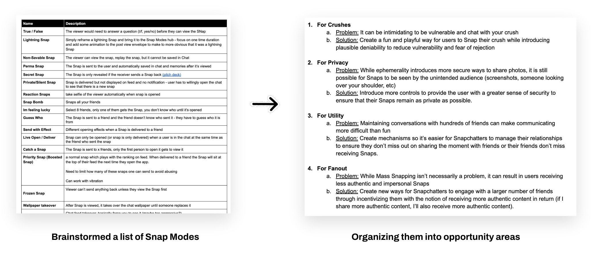
Pets have been top retention drivers for Snapchat+: members who adopt a pet retain +9.9% higher in their first month compared to non-adopters.
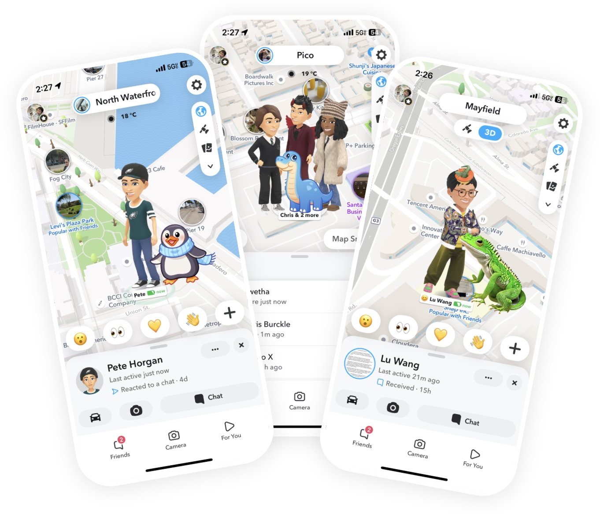
I designed, pitched, and shipped several follow-on features that amplified Pets by making them more visible to non-members and tying them to sharing and close friendships. These improvements drove significant new subscriptions and established Pets as the most retentive perk Snapchat+ offers.
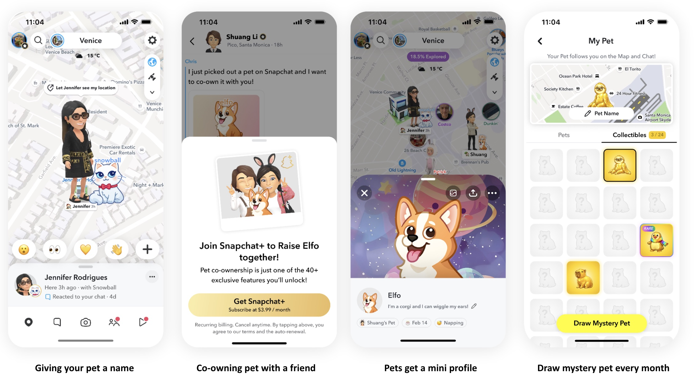
Customization is core to Snapchat identity, but early theming felt limited. I led the redesign of theming as a cross-surface system that changed Chat, Stories, navigation, and profile surfaces in a cohesive way.
I partnered with Design Systems to introduce scalable color tokens and redesigned the theme picker to feel expressive yet simple. Themes ranged from bold aesthetics to minimal everyday options, allowing members to control how visible their identity felt.
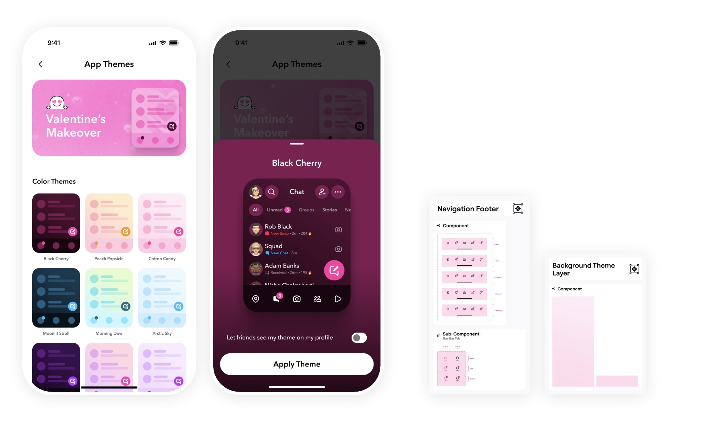
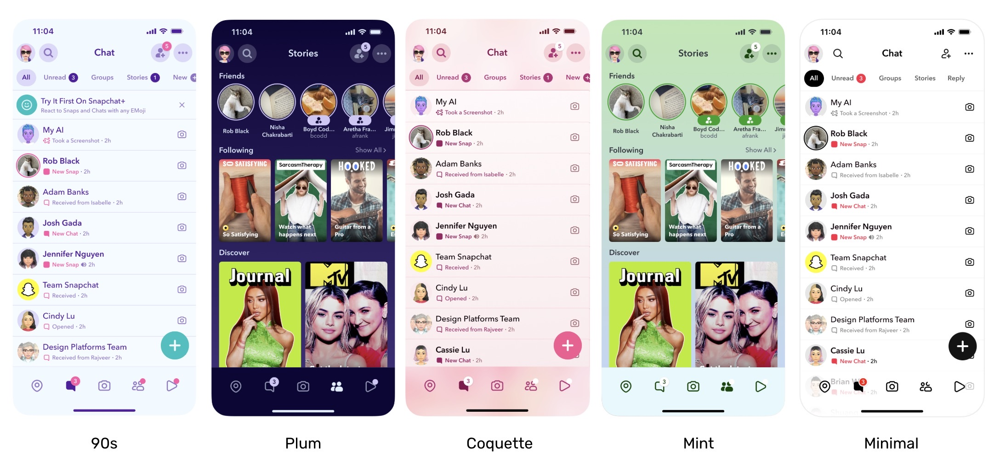
The launch drove a 28 percent lift in new subscriptions and a 24.85 percent lift in re-subscriptions. It added roughly 15,000 incremental purchases per day and reached 2.76 million adopters, about 18 percent of Snapchat+ daily active users. It ranked as Snapchat's eighth largest app opens event since 2022 with 74 million impressions.
Beyond acquisition, themes increased daily visibility of membership value and became a reusable platform for future premium drops.
1. Visibility is the real growth loop. The biggest growth levers weren't feature launches. They were moments where membership became visible in daily interactions. Badges appearing in Chat drove a 20% subscription lift. Wallpapers and Themes changed how the app looked. Pets showed up on the Map. I learned that for a social subscription product, the most important design question is not only "what do members get?" but also "where do non-members see it?"
2. Systems compound; features plateau. Early growth came from shipping new perks. That works temporarily, but each launch produces a smaller spike. The shift that mattered was connecting features into systems: onboarding that drove adoption, adoption that increased visibility, visibility that drove referrals. Once those loops were in place, growth compounded instead of resetting with every launch.
3. Gen Z will pay! But only if the value is obvious in three seconds. The paywall had 40+ features, but conversion improved most when I surfaced just five up front. Buddy Pass worked because "give your friend a free week" needs no explanation. I stopped designing for comprehensiveness and started designing for instant legibility.
4. The best monetization solves an emotional need, not a feature gap. Streak Restore taught me this clearly. People losing streaks with close friends are in a moment of genuine anxiety, and bulk restore addressed that honestly and became a $6.8M/month revenue line. The features that retained best were also the most emotionally resonant.